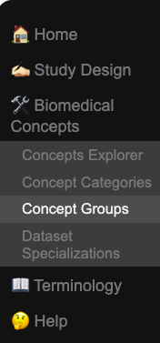
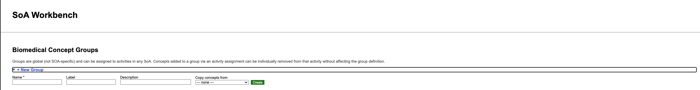
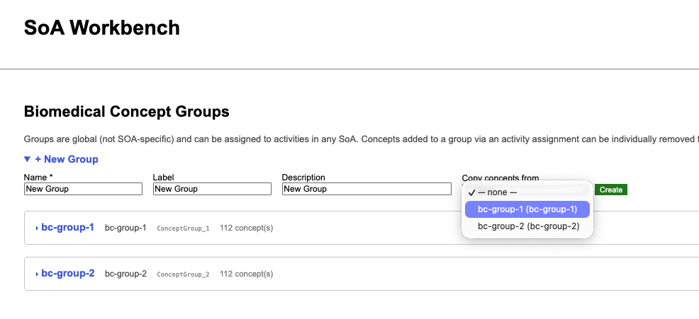
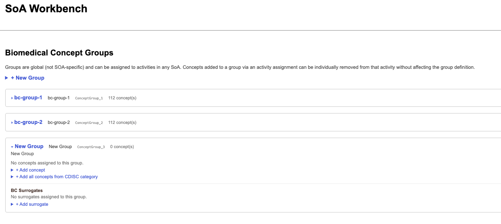
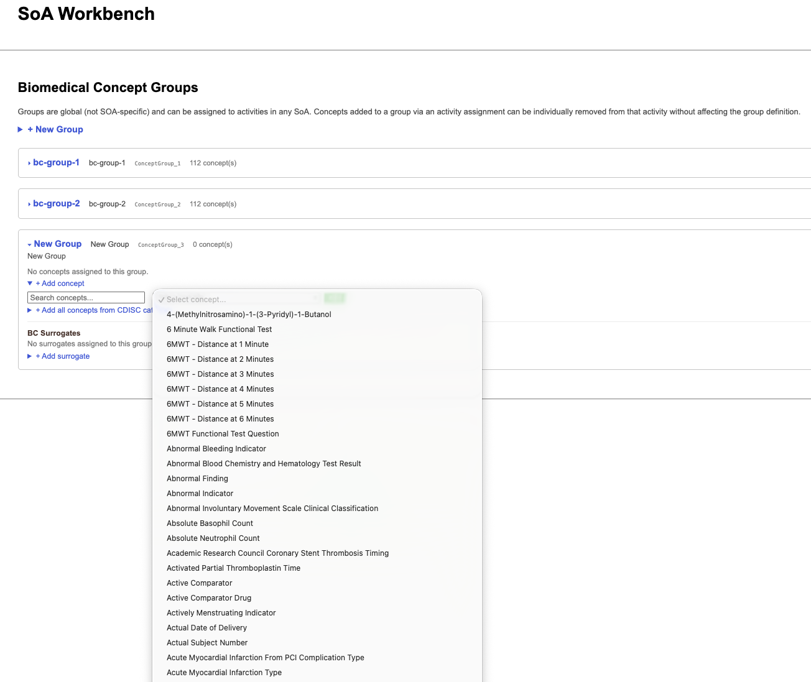
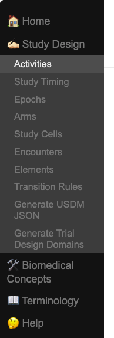
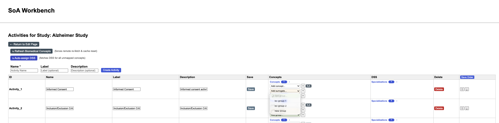
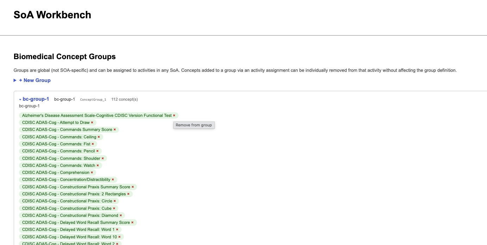
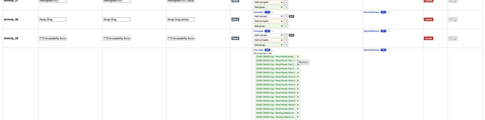
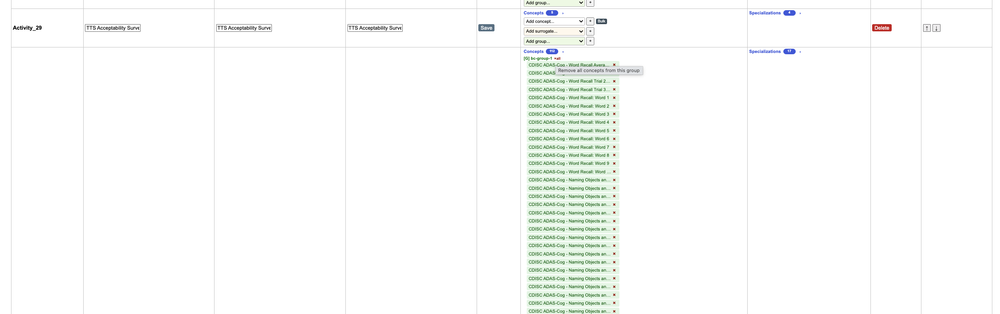

Biomedical Concept Groupings
- Groupings are a way of ‘tagging’ Biomedical Concepts so they are
associated with one another
- Groupings are created by a user
- Groupings exist at the UX layer
- Groupings exist outside of the scope of an SOA so they can be reused
in multiple studies
- Groups of Biomedical Concepts can be assigned to an Activity
- Individual Biomedical Concepts can be removed from a group when
assigned to an activity to support further customizations
- Existing groups can be copied to another group to support
inheritance and overriding
- Biomedical Concepts are still automagically mapped to corresponding
Data Set Specializations when assigned to an
Activity
Create a new group
and assign to an activity
- Select
Biomedical Concepts >
Concept Groups from the navigation bar.

alt text
- Select
New Group.

alt text
If there are existing groups, the user can choose to copy the group
and tagged biomedical concepts.

alt text
- Once the group has been created, the user can
tag
(assign) biomedical concepts to add to the group.

alt text

alt text
The user can also add an entire Biomedical Concept Category to a new
group.
The user can also add a Biomedical Concept Surrogate to the new
group.
- Once created, the user navigates to the
Activities page
for a study.

alt text
- The user can then select a group from the select dropdown for any
activity.

alt text
Customize Biomedical
Concepts in a group
- On the
Biomedical Concepts >
Concept Groups page, expand a group.

alt text
Simply click on the ‘x’ beside a biomedical concept to remove from
the group.
- On the
Study Design > Activities page,
expand an assigned group.

alt text
Simply click on the x beside a biomedical concept to
remove from the group and activity.
Remove entire group from
an Activity
- On the
Study Design > Activities page,
expand an assigned group.

alt text
Simply click on the x all icon and the group will be
unassigned from the activity.